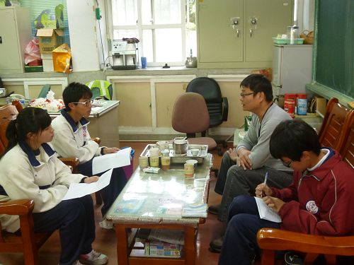
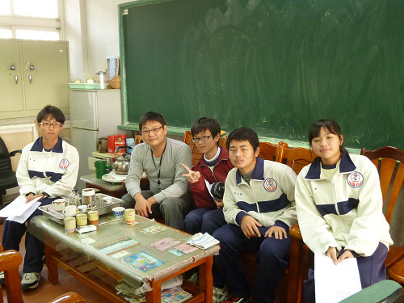

Interview > Friends
We also wanted to understand more about Teacher Huang through his friends. Hence, we interviewed the teachers Mr. Chao-rong Huang and Mr. Jia-ming Xu. Due to time restraints, we were unable to interview Mr. Xu. Hence, we made use of the Internet and sent him an e-mail with our questions. Let us understand how Teacher Huang's friends think about him!
Interview ith Mr. Chao-rong Huang:

(1) How did you meet Teacher Huang?
We met in a community event. I was involved in certain community activities, and that gave me the opportunity to know about Teacher Huang's work.
(2) Do you help out or participate in propagating cultural art?
I was part of this work. We came together because we love our community and Hsienhsi. Currently, we would be paying close attention to find unique features of Hsienhsi Township and identify elements that we want to promote. He spent quite some time thinking about this, including our windmills and aquatic environments. Everybody said that Hsienhsi is first hit by winds and last in getting water. Why is that? (strong winds? coastal region?) Yes, because we're located along the coast. We're the last to receive irrigation water and reservoirs. But Teacher Huang and I had simple ideas. We should make things that truly belong to us at the place that is first hit by winds and last in getting water. We then asked where our culture would be. This is what we'd been looking for, so we're working very hard in this area.
(3) Are you moved by Teacher Huang's actions?
Of course. Teacher Huang's contributions is not just about education, but his dedication and sacrifices regardless of any cost. Many communities often host activities like dough kneading. Teacher Huang teaches this form of art and helps to propagate it. He paid for all the materials out of his own pocket and never negotiated on instructor or lecture fees. No matter how much he was paid, he would always donate them to the community or hand them over directly to the agencies responsible for the event. If the activities were hosted by the school, he would pay for the materials by himself and donate the entire instructor's fees to the school to benefit the students. This habit never changed and I followed in his footsteps. I agree with his ideas and benefited from his sacrifices. That's why I stayed in this field to help out.
(4) Do you work in propagating culture like Teacher Huang by yourself?
No. In terms of cultural propagation, Teacher Huang would be considered a master. We would not be able to reach his level. He is an instructor in a traditional art of dough kneading, and he inherited a lot of his skills from his family. I could not learn effectively in this area since it would require artistic talent. I can only help him from the cultural aspect.
Is there anything you did to help Teacher Huang?
Uhm...I helped him in processing documents. Because of the age difference, Teacher Huang would be a beginner in typing out his teaching plan via the computer. I, however, work with computers, so I'm slightly better at this. I would help where I can in project planning, typing documents or signing them.
(5) Is there anyone else that you know who's also propagating art and craft?
There aren’t that many people in Hsienhsi working in this field besides Teacher Huang and his family who specialized in kneading dough figurines. Another culture would be that of drum-making. These are the two cultural traditions in Hsienhsi with significant depth and history. We tried to create a third cultural tradition in shadow puppetry. Teacher Huang works as a part-time instructor in shadow puppetry in schools, and also make puppets himself. Hence, we're working hard in these areas.
(6) Is there any specific attitude, personality, working ethics, dedication or contributions that you observed from Teacher Huang?
Teacher Huang is known to be a gentle and easy-going individual. His ways of doing things and dealing with people are actually quite simple. No matter the situation, his philosophy would focus primarily on local people. Putting local culture first was our idea, and he himself agreed with that. We focused on local people and local lifestyles and slowly expanded from there. We investigated the means means of helping people outside know more about Hsienhsi. It's alright if people don't really know about us. We will take the first step. You can know more about Teacher Huang's attitude if you took his class. Students are at ease in his class. No one would feel any pressure. He would provide guidance on dealing with people and things through life, and none of his lessons are typical. He would explain that his simple techniques were adopted from real life. These minute details include perspectives in dealing with things. Performance arts include the perspectives of distance and separation. You can get up close or view it from afar from different angles. This is what he taught us and the attitude he wants us to have. You must form your own opinion when looking at things and observe them from different layers. He wants to teach us and students about viewing things from different angles. You must learn to observe from important angles.
(7) Did you help Teacher Huang in the community reconstruction project?
We're all part of the community reconstruction project. But since I was from another community and that I didn't do as much work back then, I only helped them update their project and process their proposals, including scheduling project activities. That's what I did. There were other projets that must be promoted for community reconstruction, but it was impossible for one person to do all of them. Everyone has their own responsibilities. Teacher Huang used to be the executive general for the project and was responsible for every detail. He also had had to be in charge with contacting many people. A single person has limited time, so other people had to help and assist him in this particular area. Since I was from a different community, I was not able to help him as much because people in my own community would have other ideas.
(8) What did you do for community reconstruction?
As of now, we currently have annual events in Hsienhsi Community, like the lantern festivals and riddles on the 15th day of the lunar New Year. This activity was given priority before the others. Old Hsienhsi used to lack any major projects, and we rarely have large scale activities that could gather a crowd after losing the village status of Hsienhsi. Now, we have the 15th day of the lunar New Year lantern festival. All the riddles were written by Teacher Huang so that people would investigate their culture and guess the riddles. We're still hosting this event and hope to create unique features for Hsienhsi Township. People now know that there's a village in Hsienhsi Township that would host a festival on the 15th day of the lunar New Year that would be open to all visitors.
(9) For the last question, can you use one sentence to describe Teacher Huang?
That would be rather difficult.
For example, he's always talking about things, "composer of couplets and literary talents - Hsienshi native; gentle, fit and dedicated to teaching in Hsienhsi; being stubborn in work and sacrificing hi entire life". He's doing this right now. It would be hard to use one sentence to describe him as he'd achieved mastery in many fields. But he wished that there would be people in the next generation to help propagate culture, and hope that the next generation would help inherit the entire culture.
 |
↑Beautiful photographs taken after the interview |
Interviewing Mr. Jia-ming Xu:
(1) How did you meet Teacher Huang?
I first met him 13 years ago when I attended the Hsienhsi Primary School festival. Teacher Huang also attended that event, and that's where I first knew this person.
(2) How did you assist or participate in cultural propagation?
I am not a talented person. My desire is to keep my post. Propagation would depend on other dedicated contributors.
(3) Are you touchedby Teacher Huang's actions?
Teacher Huang is my mentor who brought me in this field, and changed my life.
(4) Have you ever propagated art traditions like Teacher Huang?
I think passing the techniques of crafting toys that I played in my youth in a systematic and organized manner would count as propagating art traditions.
(5) Is there any specific attitude, personality, working ethics, dedication or contributions that you observe from Teacher Huang?
Helpful, does not care for rewards, works hard for self improvement, kindhearted and happy with life.
(The text and pictures on these pages were based on interview transcriptions, photographs and writing taken by the project team)

|